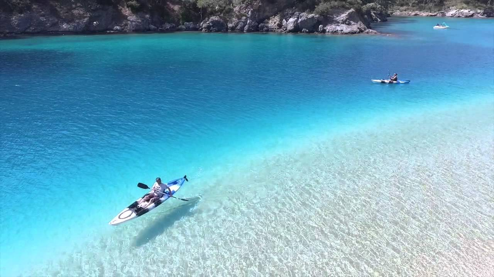
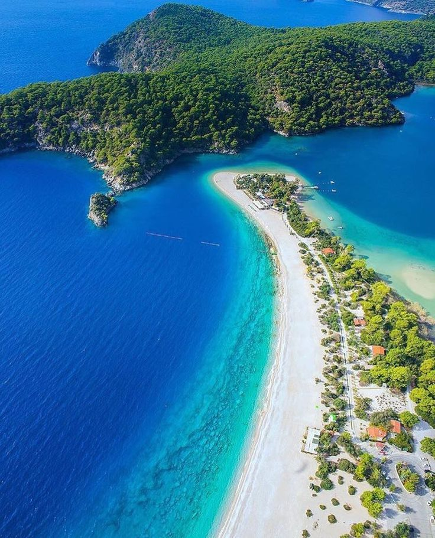
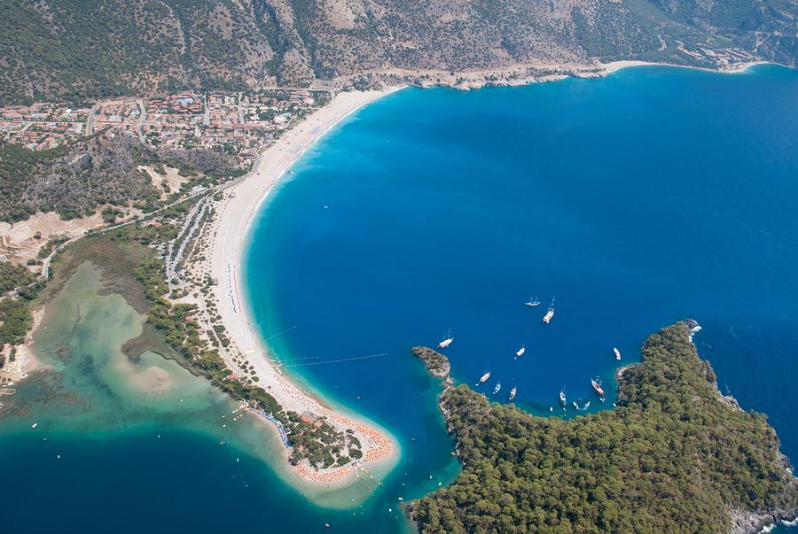
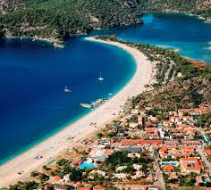

Oludeniz bukvalno znači Mrtvo more, tako nazvano zbog svojih mirnih voda čak i tokom oluja.Oludeniz je malo selo i plaža u okrugu Fetije provincije Mugla, na tirkiznoj obali jugozapadne Turske, na mestu gde se spaja Egejsko i Mediteransko more. Nalazi se 14 km južno od Fetijea, u blizini planine Babadag. Postoji peščani zaliv na ušću Oludeniza, kao i plava laguna. Plaže su šljunkaste. Laguna je nacionalni rezervat prirode i gradnja je na njoj izričito zabranjena. Morska voda Oludeniza je poznata po nijansama tirkizne i tamnoplave, dok je njegova plaza zvanično nagrađena plavom zastavom.
   